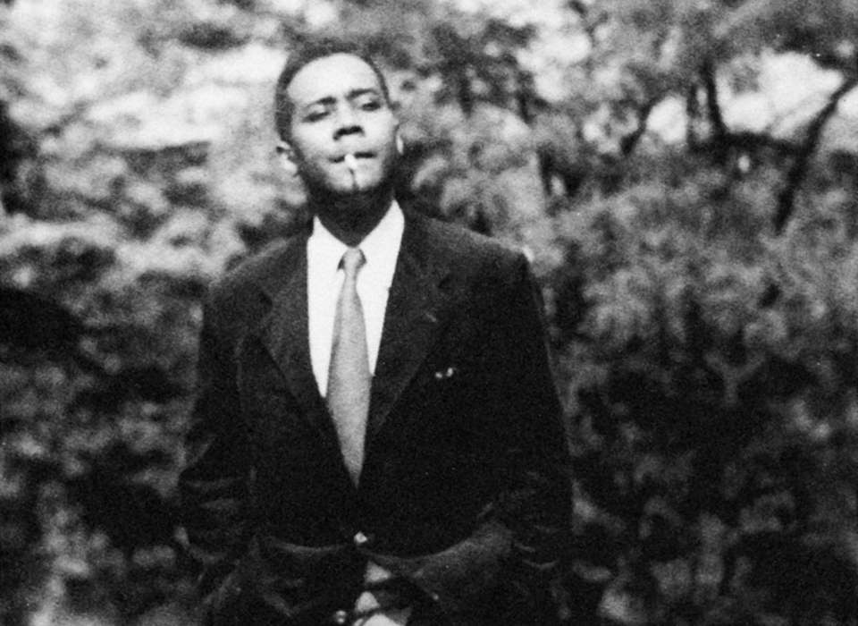
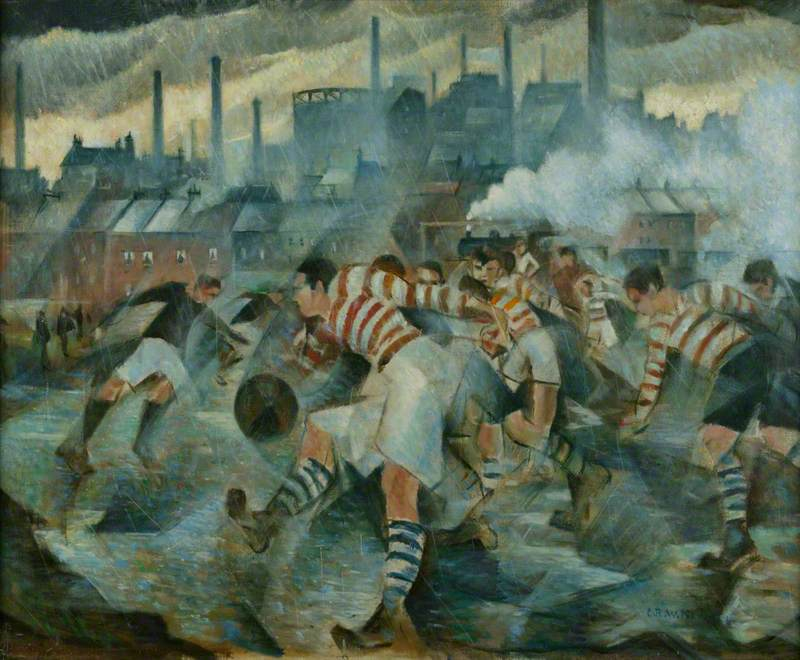
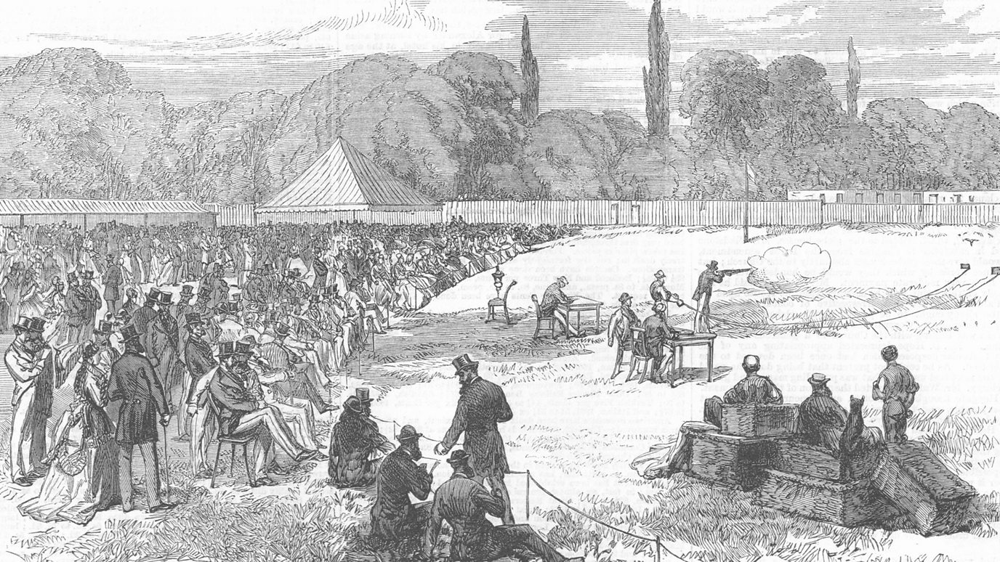

I study forms of sport and law. My research develops the critique of political economy as a broader critical theory encompassing modern organised sport and law.
Read more ↓“For communists, the science of capitalism is the theory of the rules of a game they hope to consign to the dustbin. The goal for us is neither just to enumerate those rules nor to learn to play the game better, but to develop from them an understanding of how the game itself might be overcome.”
Jasper Bernes, The Future of Revolution: Communist Prospects from the Paris Commune to the George Floyd Uprising (2025)
About
I am a doctoral candidate at the Department of Law, Umeå University, and legal counsel at the Swedish Sports Confederation. I am not a full-time academic. My dissertation, Club Fetishism: A Critique of Sports, Club Law and Capitalism, has been written over many years in the hours around a job inside the organisation it studies.
The dissertation asks how club law, the legal regime of organised sport, built on the non-profit sports association, is socially constituted and what role it plays in the reproduction of capitalist society. Drawing on legal form theory, it proceeds as negative critique. Rather than proposing improvements to sports law, it asks why the social regulation of sport assumed a legal character at all, and what that form does — how the harms generated by modern organised sport are addressed, mitigated, obscured, or aggravated through law and legal scholarship.
The point of the critique is not abandonment. Following Robert Knox’s ‘Strategy and Tactics’ and its case for a principled opportunism, the dissertation asks on what terms it is possible to use and work through club law without undermining longer-term, structural considerations — not to learn to play the game better, but to keep in view how the game itself might be overcome.
I came to these questions from inside the institutions I write about. I am a first-generation academic: I grew up in a secular, working-class household in rural southern Sweden and in the local football club. Before law there was labour: janitor, postman, construction assistant, hammering iron bars into railway sleepers, reconditioning cars.
“Faced with fundamental divisions […] I had gone to the right and, by cutting myself off […] delayed my political development.”
C.L.R. James, Beyond a Boundary (1963)
I escaped it the way James describes — by cutting myself off, by joining a sports club. It took me a long time to see it. That trajectory is where the dissertation begins.
Finally, to finance my research, I also work in a freelance capacity with my wife, Jessica Krüger, through Krüger Law AB. If you have a sports-related contract that needs drafting or review, a question of sports law that needs a legal opinion, or you want to consult on a project, please contact me to discuss options. Similarly, if you would like to set up a talk, a seminar, or a short course on any of my research, I am happy to discuss options — for clubs and associations I keep the fee low, since I know how things stand for most of them. All of this, of course, provided my employer agrees. I can be reached via e-mail at: kruger.alexander87@gmail.com.
I still belong to a sports club: I train muay thai at Collective Effort, a member-run socialist sports association in Malmö. Everyone is welcome.

Research
My research interests lie at the intersection of law, the state, the so-called “third sector” — the non-profit industrial complex — and cultural forms, sport above all. What runs through the work is the ambition to develop the critique of political economy as a broader critical theory of the perverted world: how the forms in which we organise our common life come to stand over us and rule us.

Publications
- Club Fetishism: A Critique of Sports, Club Law and Capitalism, doctoral dissertation, Umeå University (in progress).
- Antoine Duval, Alexander Krüger and Johan Lindholm (eds), The European Roots of the Lex Sportiva: How Europe Rules Global Sport (Hart Publishing 2024). [open access]
- ‘Lex Sportiva and New Materialism: Towards Investigations into Sports Law’s Dark Materials?’ in Duval, Krüger and Lindholm (eds), The European Roots of the Lex Sportiva (Hart Publishing 2024). [open access]
Clubland
Clubland is the world the dissertation maps: the clubs, federations and governing bodies of modern organised sport, and the law that holds them together. It is also my Substack.
Clubland will cover a broad range of material, including writing, commentary, perhaps drafts and advance versions of forthcoming articles, previously unpublished material, book reviews, talk transcripts, syllabus and more. It will also serve as a live blog compiling my ongoing research on club law and modern organised sport. You can subscribe to support my research.

Contact
- Emailkruger.alexander87@gmail.com
- Bluesky@alexkruger.bsky.social
- ConsultingKrüger Law AB